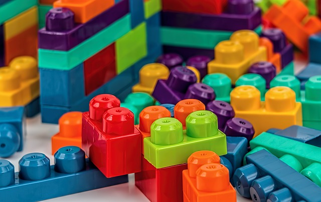

Pobawcie się ze mną... klockami
To będzie wpis inaugurujący cykl o zabawach i zabawkach, które wspierają rozwój mowy. Od razu zaznaczam – nie ma zabawek, które robią to same z siebie. Dopiero wykorzystywane odpowiednio przez rodzica podczas zabawy z dzieckiem, spełniają tę funkcję. Dzisiaj zaczniemy od klocków.
Od kiedy? Klockami można się zacząć bezpiecznie bawić, gdy dziecko stabilnie siedzi. Na początku na pewno będzie je przede wszystkim brało do buzi, ale można próbować się bawić w układanie wieży z dwóch czy trzech klocków, czy ćwiczyć reakcję na polecenie “Daj!”. Natomiast już roczniak będzie próbował sam układać wieżę, a największą frajdę będzie miał z jej burzenia.
Jakie? To zależy. Na początek polecam drewniane, mogą być zabezpieczone tylko lakierem, albo pomalowane farbami. Wybierajmy klocki z atestem, przeznaczone specjalnie dla maluchów, bo te będą wyprodukowane przy użyciu bezpiecznych farb. Później dobre będą duże plastikowe klocki, które Dziecko będzie mogło łączyć ze sobą w trwałe budowle. Lepiej, jeśli będą z twardszego plastiku, wtedy mniejsze jest prawdopodobieństwo ich pęknięcia. Na mniejsze klocki, takie jak Lego, przychodzi czas, gdy mamy pewność, że nic nie ląduje w buzi Dziecka, a jego palce są na tyle sprawne, że radzi sobie z wciskaniem drobnych elementów. Zabawa klockami ma być przyjemnością, a nie powodować frustracje u Dziecka z tego powodu, że nie umie ich poskładać. Ciekawymi klockami są tak zwane wafle – ich kształt i sposób łączenia są inne, niż w przypadku zwykłych klocków, za to można z nich budować sporej wielkości kształty.
Zalety. Zwykłe plastikowe klocki są tanie i łatwo dostępne. Bez problemu da się je myć. Są też lekkie. Zabawa nimi ma duży wpływ na rozwój sprawności dłoni. Wpływa także na umiejętność skupienia. W przypadku klocków Lego, Dzieci uczą się działać według instrukcji. Zaletą jest też to, że na rynku można znaleźć naprawdę dużo różnych rodzajów klocków, w wielu kształtach i kolorach.
Wady. Drewniane nie za bardzo można myć. I trzeba uważać, jeśli Dziecko ma skłonności do rzucania zabawkami, drewniany klocek potrafi zrobić krzywdę. Wtedy lepiej wybrać plastikowe. Jeśli idzie o Lego, to mają jedną zasadniczą wadę – bardzo lubią ukrywać się w dywanach czy innych zakamarkach i czaić się w nocy na bose stopy 😀 Właściwie jest jeszcze druga – przynajmniej ja uważam to za wadę – cena. Zakup kilku zestawów to spory wydatek.

Zabawy
- Szeregowanie. Zbuduj z klocków trzy kostki różnej wielkości. Zapytaj Dziecko: która z nich jest największa, a która najmniejsza? Która będzie w środku? Jeśli Dziecko świetnie radzi sobie z trzema, dołóż więcej kostek. Sprawdź, do ilu dojdziecie. Zobacz, czy Dziecko szereguje je przez porównywanie, czy może bez przykładania do siebie potrafi wstawić kostki w odpowiednie miejsce. Oczywiście im Dziecko starsze, tym łatwiej mu będzie wykonać takie zadanie. Potem możecie się bawić w “zbuduj większą/mniejsza wieżę” i oprócz porównywania wielkości ćwiczyć także przeliczanie elementów.
- Zbuduj dla lalki… Mam dwie córki. Nie wiem, jak chłopaki, ale moje dziewczyny uwielbiały zabawy malutkimi lalkami czy figurkami zwierząt. I największą frajdę sprawiało im, gdy budowałyśmy dla tych laleczek domki – tu kuchnia, tam sypialnia, taras, basen, salon. Dziecko ćwiczy umiejętność planowania, orientacji w przestrzeni oraz rozszerza słownictwo o nazwy pomieszczeń czy mebli.
- Zbuduj to, co ja. Na początek tworzymy prostą budowlę, np. kostkę z klocków – wafli, a Dziecko ma zbudować dokładnie taką samą, odwzorowując kolory na poszczególnych jej ściankach. W stopniu zaawansowanym możemy tworzyć spore konstrukcje przestrzenne z drobniejszych klocków – wszystko zależy od możliwości Dziecka, na które musimy zwracać szczególną uwagę, by zabawa była dla niego przyjemnością, a nie męczeniem się ze zbyt trudnym zadaniem.
- Ten sam wzór. Układamy klocki w jakiś kolorowy wzór i prosimy Dziecko, żeby ułożyło dokładnie taki sam. Zaczynamy od dwóch kolorów, stopniowo dodając następne. Do tej zabawy przydają się także wszelkiego rodzaju mozaiki, trzeba tylko uważać na małe elementy. Inną odmianą zabawy będzie zgadywanie, który kolor, klocek powinien być następny. Np. układamy na zmianę klocki zielony, czerwony, zielony, czerwony i pytamy: a teraz jaki klocek mam położyć? Oprócz tego, że ćwiczymy tutaj nazywanie kolorów, to przede wszystkim mamy okazję rozwijać spostrzegawczość wzrokową, pamięć wzrokową (gdy np. pokażemy wzór starszemu Dziecku a potem go zakryjemy, by odtwarzało go z pamięci) czy koordynację wzrokowo-ruchową.
- Klocki, nawet po najlepszej zabawie, trzeba posprzątać. Ale tę zwykle nielubianą czynność także można zamienić w zabawę. Klocki można przechowywać w pudle, koszu, worku. A gdyby tak wrzucać je do czterech worków w kolorach klocków? Dzieci uczy się segregowania według koloru właśnie, rozróżniania i nazywania tych kolorów. Można sprzątać na czas – włączamy stoper i pytamy: Kto sprzątnie swój kolor w ciągu dwóch minut? Można później porównywać, w którym worku jest więcej, mniej, tyle samo klocków – to świetna okazja do poznawania tych pojęć. Jeżeli mamy karton na klocki, możemy go podzielić na części według kolorów, wklejając w środku dodatkowe ścianki. Można sprzątając dzielić klocki na duże i małe, podzielone na dwa, na cztery i na osiem – uczymy wtedy przeliczania i rozróżniania wielkości. Jakie kategorie sobie wymyślimy, zależy tylko od naszej inwencji. Dziecko będzie się w ten sposób nieświadomie uczyć różnych pojęć, a robienie porządku minie niepostrzeżenie.